COMII · Proyecto 2 · AMC · lo que ya está hecho
Una observación I/Q entra; salen cuatro respuestas: ¿hay señal? → ¿con qué SNR? → ¿qué modulación? → ¿con cuánta confianza? Abajo, cada bloque terminado con su código y su resultado.
src/generator.py · 01_generador(2).ipynb · 02_eda.ipynb
Seis modulaciones más ruido: constelación con Es = 1 → RRC (β = 0.35, sps = 8) → multitrayecto Rayleigh → CFO y fase → AWGN con N0 = 1 → ganancia A.
def channel(x, rng, snr_db, sps=8, cfo=0.0, phase=0.0, amp=1.0, fading=True,
delays=(0, 1, 2), powers_db=(0.0, -10.0, -20.0)):
"""Señal limpia (Es = 1) -> fading -> CFO/fase -> AWGN -> ganancia del receptor.
Devuelve (y, meta). meta["snr_inst_db"] es el Es/N0 real de esta
realización, después del fading.
"""
s = x * np.sqrt(10.0 ** (snr_db / 10.0)) # Es = 10^(snr/10), N0 = 1
if fading:
s, _ = rayleigh_multipath(s, rng, delays, powers_db)
s = cfo_phase(s, cfo, phase)
es_inst = sps * np.mean(np.abs(s) ** 2) # energía por símbolo medida
y = amp * (s + awgn(len(s), rng)) # la ganancia no cambia el SNR
meta = {"snr_db": snr_db,
"snr_inst_db": float(10.0 * np.log10(es_inst)),
"cfo": cfo, "phase": phase, "amp": amp, "fading": fading}
return y.astype(np.complex64), metadef constellation(mod):
"""Devuelve los M puntos de la constelación, normalizados a energía media 1."""
if mod == "BPSK":
c = _psk(2) # {+1, -1}: igual que 2b-1 de tu notebook
elif mod == "QPSK":
c = _psk(4, np.pi / 4) # rotada 45° para quedar en las diagonales
# … 8PSK, 16QAM, 64QAM, 16APSK …
Es = np.mean(np.abs(c) ** 2) # energía media por símbolo
c = c / np.sqrt(Es) # ahora mean(|c|^2) = 1
return c.astype(np.complex64)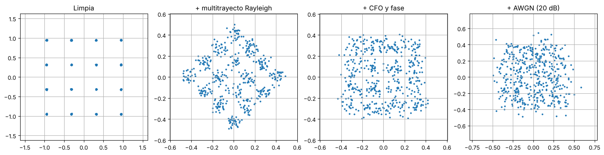
01_generador, celda 15.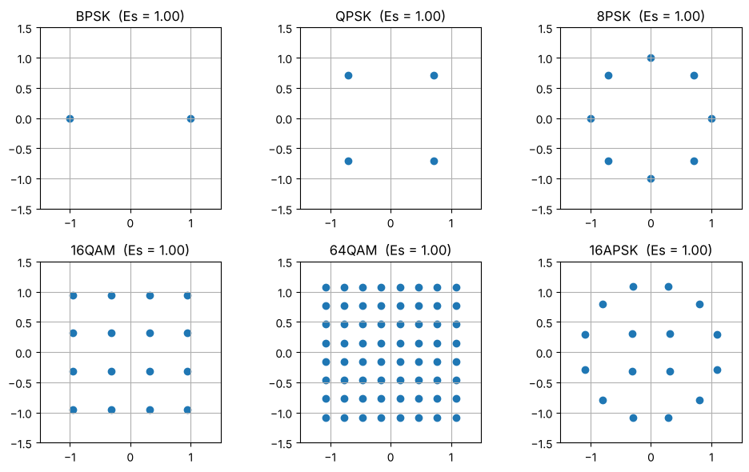
01_generador, celda 5.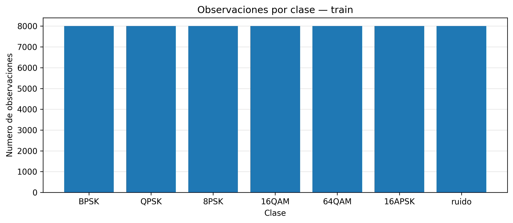
02_eda.src/detection.py · 03_deteccion.ipynb
El estadístico T = potencia media dentro de banda / fuera de banda decide si hay señal (umbral GAMMA para Pfa = 0.01) y, con el mismo T, da el SNR: Es/N0 ≈ 1.3516·(T − 1). La ganancia A se cancela y no depende de la modulación.
def calcular_T(signal):
N = len(signal)
spectrum = np.fft.fft(signal)
frequencies = np.fft.fftfreq(N, d=1.0)
power = np.abs(spectrum)**2/N
inside = np.abs(frequencies) <= BAND_EDGE
outside = np.abs(frequencies) > OUTSIDE_EDGE
return np.mean(power[inside]) / np.mean(power[outside])
# Bajo ruido puro, T ~ F(2*K_INSIDE, 2*K_OUTSIDE)
T_NOISE_DISTRIBUTION = f_distribution(2 * K_INSIDE, 2 * K_OUTSIDE)
GAMMA = float(T_NOISE_DISTRIBUTION.ppf(1.0 - P_FA))
def detectar_senal(signal):
# … validación de forma y de T finito …
statistic = float(calcular_T(signal))
return statistic > GAMMA# Es/N0 ≈ (T - 1) * FACTOR_SNR_ESPECTRAL.
FACTOR_SNR_ESPECTRAL = SPS * K_INSIDE / float(N_SAMPLES)
def estimar_snr_espectral(signal):
# … validación de forma y de T finito …
statistic = float(calcular_T(signal))
if statistic <= 1.0:
return SNR_PISO_DB
snr_linear = (statistic - 1.0) * FACTOR_SNR_ESPECTRAL
snr_db = 10.0 * np.log10(snr_linear)
# … recorte a [SNR_PISO_DB, SNR_TECHO_DB] …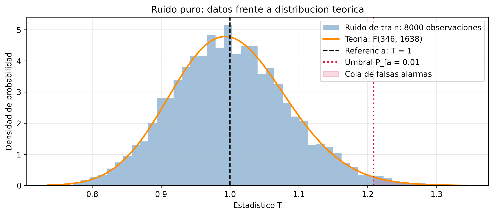
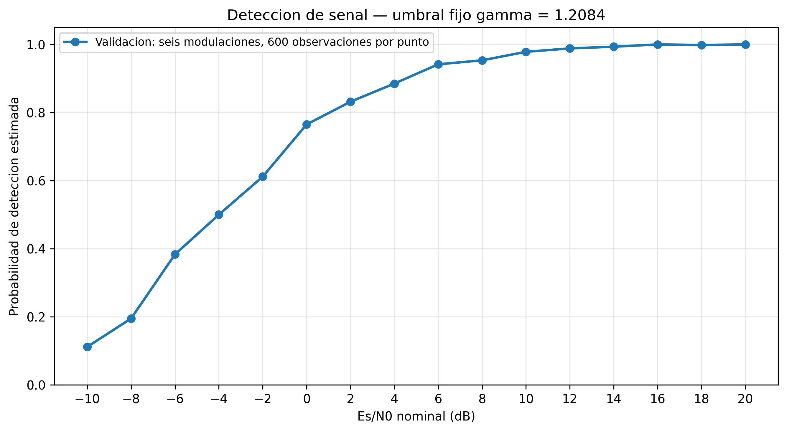
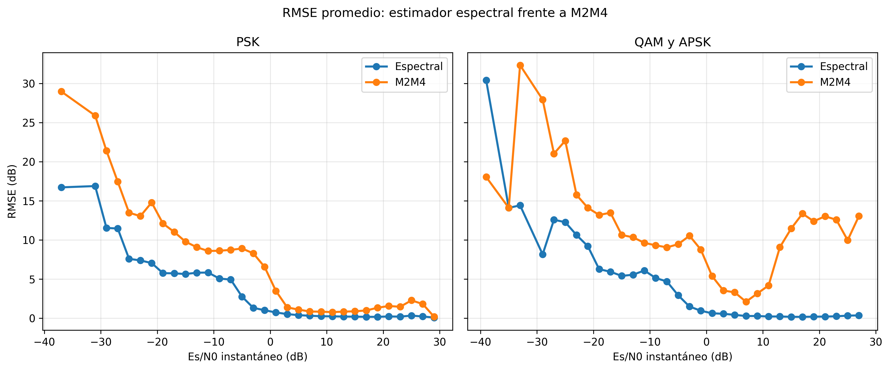
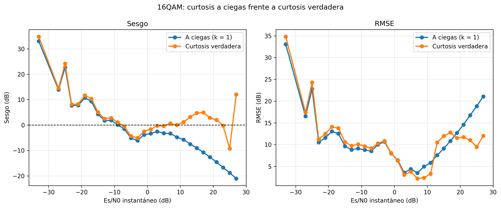
src/features.py · 04_features.ipynb
Cada observación se centra, se normaliza a potencia 1 y se resume en cumulantes de orden 2, 4 y 6. Un Random Forest de 200 árboles clasifica con 5 de ellos: C21 queda fuera porque, tras normalizar, vale siempre 1.
models/random_forest.joblib
def calculate_cumulants(signal):
"""Estimar cumulantes mediante momentos de la observacion normalizada."""
z = normalize_power(signal)
z_conj = np.conjugate(z)
magnitude_squared = np.abs(z) ** 2
# Momentos de orden 2.
m20 = np.mean(z ** 2)
m21 = np.mean(magnitude_squared)
# Momentos de orden 4.
m40 = np.mean(z ** 4)
m42 = np.mean(magnitude_squared ** 2)
# … m30, m31, m41, m60, m63 …
c40 = m40 - 3.0 * m20 ** 2
c42 = (
m42
- np.abs(m20) ** 2
- 2.0 * m21 ** 2
)
# … c60, c63 …
return {
"C20": c20,
"C21": float(np.real(c21)),
"C40": c40,
"C42": float(np.real(c42)),
"C60": c60,
"C63": float(np.real(c63)),
}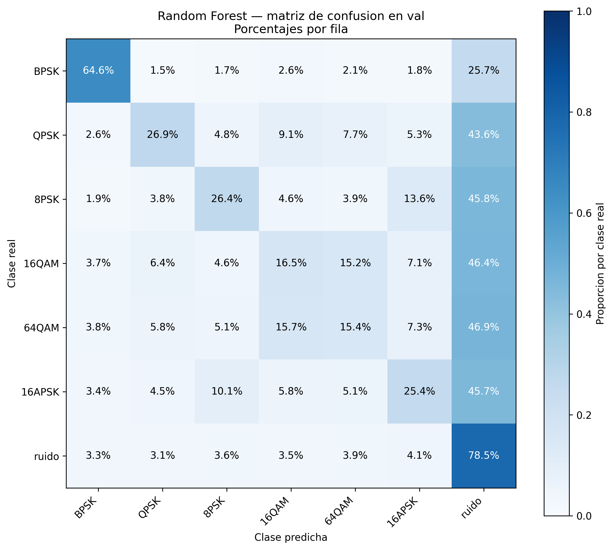
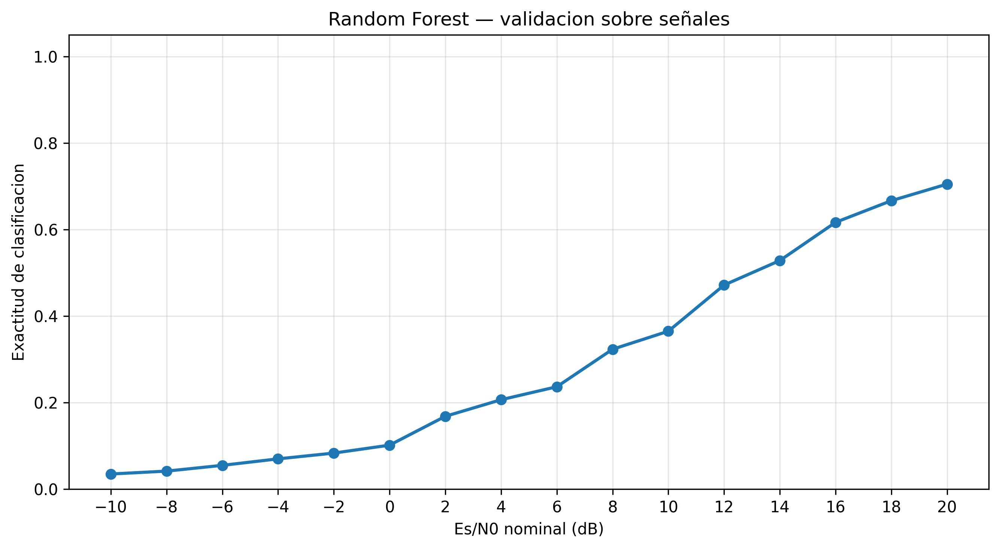
src/models.py · 05_cnn_1d.ipynb
La red recibe las muestras I/Q crudas (2 canales × 1024) y aprende sus propios filtros. Adam, lr 0.001, lote 64, 30 épocas; se guarda la mejor época por pérdida de validación.
class ModulationCNN(nn.Module):
def __init__(self, num_classes=7):
super(ModulationCNN, self).__init__()
self.features = nn.Sequential(
# Entrada: (lote, 2, 1024). Los dos canales son I y Q.
nn.Conv1d(in_channels=2, out_channels=16, kernel_size=7, padding=3),
nn.ReLU(),
nn.MaxPool1d(kernel_size=2),
# Forma: (lote, 16, 512).
nn.Conv1d(in_channels=16, out_channels=32, kernel_size=5, padding=2),
nn.ReLU(),
nn.MaxPool1d(kernel_size=2),
# Forma: (lote, 32, 256).
nn.Conv1d(in_channels=32, out_channels=64, kernel_size=5, padding=2),
nn.ReLU(),
# Promedio temporal de cada mapa. Salida: (lote, 64, 1).
nn.AdaptiveAvgPool1d(1)
)
# Una puntuación por clase.
self.classifier = nn.Linear(64, num_classes)
def forward(self, x):
"""Transformar un lote I/Q en puntuaciones por clase."""
x = self.features(x)
x = x.squeeze(-1) # (lote, 64, 1) -> (lote, 64)
logits = self.classifier(x) # (lote, num_classes)
return logits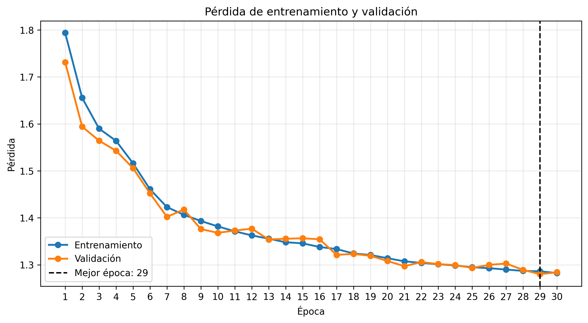
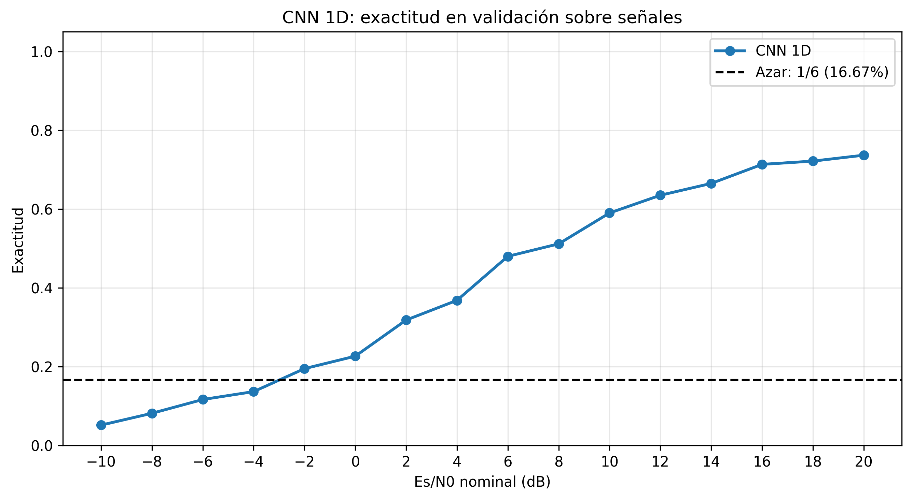
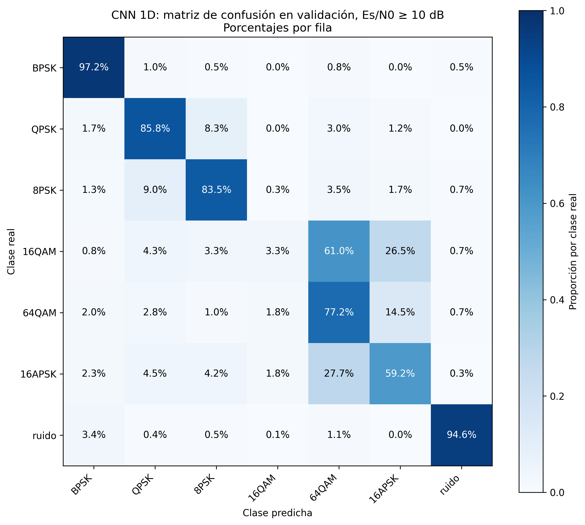